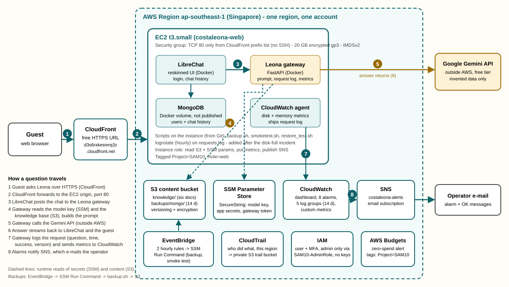
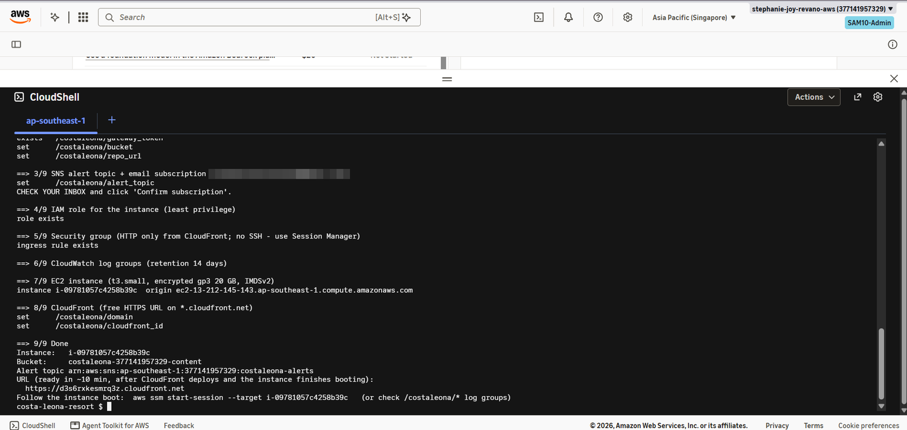
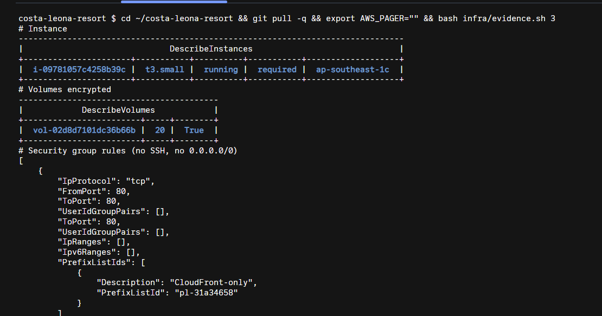

Pillars
What I optimised, and what I accepted
I optimised for Security and Operational Excellence: least privilege, no secrets in code, everything monitored and scripted. I deliberately accepted Reliability as the weaker pillar: one server in one Availability Zone is cheap and simple, and tested hourly backups mean a failure costs minutes, not days.
Kept small
What I chose not to build
No load balancer, no RDS, no multi-region, no Kubernetes, no fine-tuning. One account, one region, one instance. The whole build is scripted in infra/, so it can be rebuilt, not just restored.
What runs where
| Layer | Service | What it is for |
|---|---|---|
| Networking / HTTPS | Amazon CloudFront (default certificate) | Free HTTPS address (*.cloudfront.net); the only thing allowed to reach the server. |
| Networking | EC2 security group costaleona-web | One rule: TCP 80 from the CloudFront prefix list. No SSH, no 0.0.0.0/0. |
| Compute | EC2 t3.small, Amazon Linux 2023, 20 GB encrypted gp3, IMDSv2 | Three Docker containers: LibreChat (the reskinned interface), the Leona gateway, MongoDB. |
| Database | MongoDB 8 container, Docker volume | Users and chat history. No published port. Backed up hourly to S3. |
| Storage | Amazon S3 (versioned, encrypted, private) | knowledge/ holds the six documents Leona reads; backups/mongo/ holds hourly dumps (kept 14 days). |
| Config and secrets | Systems Manager Parameter Store | SecureString parameters for the model key, app secrets and gateway token, read at runtime. |
| Operations | CloudWatch, SNS, EventBridge + SSM Run Command, CloudTrail, AWS Budgets | Dashboard, 8 alarms, 5 log groups, e-mail alerts, schedules, audit trail, cost alert. |
| External model | Google Gemini API, free tier | The language model, outside AWS; no AWS AI service is used. |
How a question travels
- The guest types a question; the browser sends it over HTTPS to CloudFront.
- CloudFront forwards it to the EC2 instance on port 80.
- LibreChat passes the chat to the Leona gateway.
- The gateway reads the model key from Parameter Store and the six documents from S3 (refreshed every 5 minutes) and builds the prompt.
- The gateway calls the Gemini API.
- The answer streams back through LibreChat to the guest.
- The gateway writes one log line (question, duration, success, version) and sends metrics to CloudWatch; if something is wrong, an alarm e-mails me through SNS.



